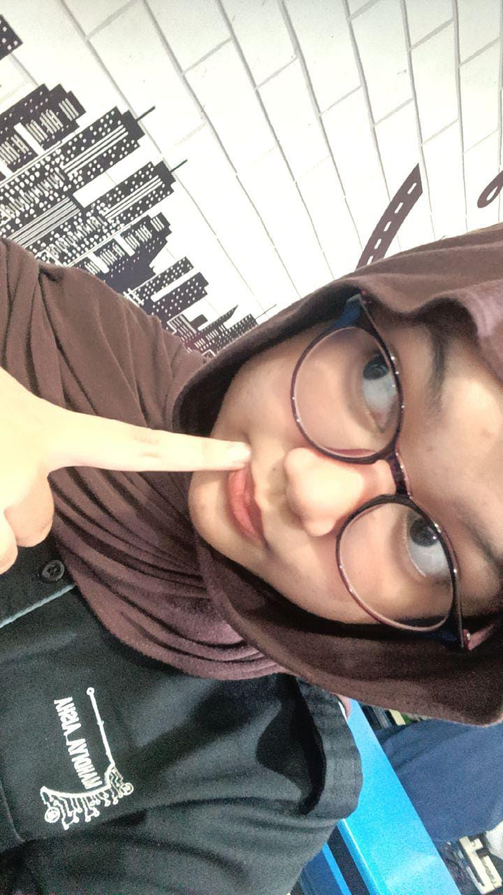

Cybersecurity Engineering Student
Halo, saya Mahdiya
Mahasiswa Rekayasa Keamanan Siber di Politeknik Negeri Batam. Tertarik pada Cyber Security dan Web Development.

Tentang Saya
Saya adalah mahasiswa Rekayasa Keamanan Siber di Politeknik Negeri Batam yang sedang mempelajari dasar-dasar cybersecurity dan pengembangan web. Saya tertarik pada bagaimana keamanan diterapkan dalam sebuah sistem, mulai dari pengembangan web, jaringan komputer, hingga administrasi sistem, dengan fokus utama pada perpaduan antara cybersecurity dan pengembangan aplikasi web yang aman.
Keahlian Teknis
Pendidikan & Pengalaman
2025 — Sekarang
Rekayasa Keamanan Siber, Politeknik Negeri Batam — Kelas RKS 2A Pagi.
Proyek Kelompok
Pengembangan web file manager dengan integrasi SIEM, Active Directory, dan kriptografi (PBL205).